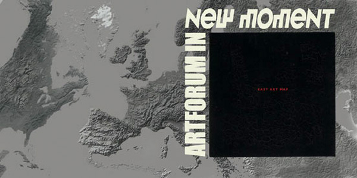

basekamp space > Events
East Art Map: IRWIN / NSK
Video screenings
IRWIN presentation
EAM project
EAM online
EAM Book
About IRWIN / NSK
EAM project desription:

EAST ART MAP - (RE) CONSTRUCTION OF THE HISTORY OF ART IN EASTERN EUROPE
Every single move of the artist in Western civilization is documented.
But, did you know there is no similar thing in Eastern Europe?!
In Eastern Europe (former communist countries, East & Central Europe or New Europe) there is, as a rule, no transparent structures of events, artifacts and artists significant for the history of art that would be organized into a referential system and accepted and respected outside the borders of a particular country. Instead of them we encounter systems that are closed within national borders, most often based on argumentation adapted to local needs, and sometimes even doubled so that besides official art histories there are a whole series of stories and legends about art and artists who opposed the former. But written records about these latter are few and fragmented. Comparisons with contemporary Western art and artists are extremely rare.
1. A system that is fragmented to such an extent, first of all, prevents any serious possibility to comprehend the art created during the times of socialism as a whole.
2. Secondly, it represents a huge problem of orientation for artists, who, apart from lacking any solid support in their activity, are compelled, for the same reason, to steer between the local and international systems of art.
3. And thirdly, this blocks communication among artists, critics and theoreticians from these countries.
History is not given.
It has to be constructed.